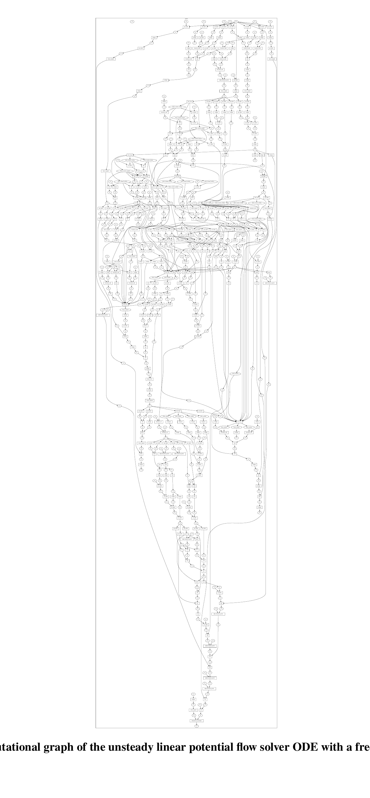
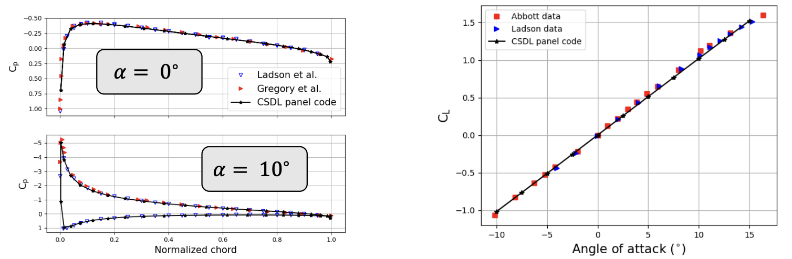
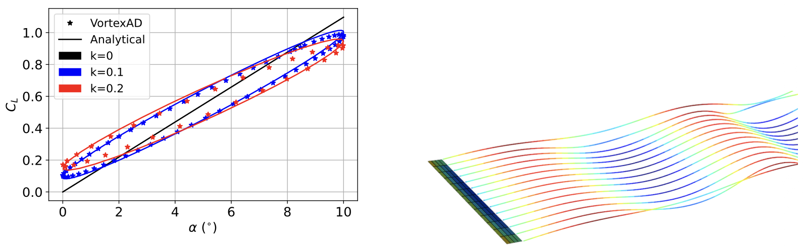
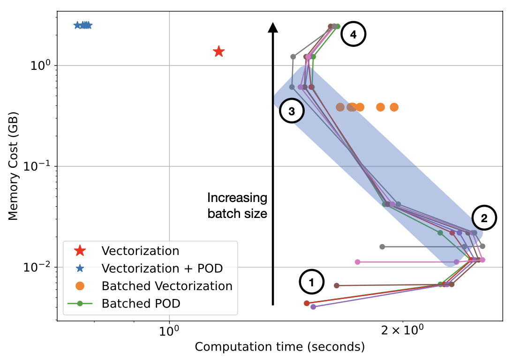

Unsteady adjoints for linear potential flow
- Context
- Panel and vortex-lattice methods predict inviscid aerodynamic loads, with free-wake models accounting for wake motion and unsteady effects.
- Gap
- Dense influence calculations and evolving wake states make these analyses and their design sensitivities expensive to compute and store.
- Research goal
- Automate adjoint sensitivities and reduce memory requirements for steady and unsteady potential-flow models used in aircraft design.
Selected studies
ReferencesGraph-native linear potential flow framework
VortexAD combines panel and vortex-lattice models with an ODE formulation of free-wake shedding, integrated through Ozone. CSDL supplies adjoint sensitivities through the resulting graph. Steady and unsteady verification and validation cases assess the aerodynamic predictions within the framework's inviscid-flow assumptions.
Luca Scotzniovsky, John T. Hwang. VortexAD: A Graph-Based Linear Potential Flow Analysis Framework for Large-Scale MDO. AIAA AVIATION 2026 Forum, AIAA 2026-4642, 2026.
@inproceedings{scotzniovsky2026vortexad,
author = {Luca Scotzniovsky and John T. Hwang},
title = {VortexAD: A Graph-Based Linear Potential Flow Analysis Framework for Large-Scale MDO},
booktitle = {AIAA AVIATION 2026 Forum, AIAA 2026-4642},
year = {2026},
note = {Metadata verification: Crossref unavailable: HTTPError}
}





Partitioned vectorization for large panel systems
Partitioned vectorization evaluates influence coefficients in batches to limit intermediate storage; retaining the full dense matrix still costs quadratic memory. Combining batching with POD instead assembles a reduced system, giving linear memory scaling with panel count for a fixed reduced basis in the reported tests.
Luca Scotzniovsky, John T. Hwang. A Fast, Memory-Efficient Panel Method for Large-Scale Multidisciplinary Design Optimization Under Uncertainty Using Graph-Based Modeling. AIAA AVIATION 2025 Forum, 2025.
@inproceedings{scotzniovsky2025fast,
author = {Luca Scotzniovsky and John T. Hwang},
title = {A Fast, Memory-Efficient Panel Method for Large-Scale Multidisciplinary Design Optimization Under Uncertainty Using Graph-Based Modeling},
booktitle = {AIAA AVIATION 2025 Forum},
year = {2025}
}

References
- Luca Scotzniovsky, John T. Hwang. A Fast, Memory-Efficient Panel Method for Large-Scale Multidisciplinary Design Optimization Under Uncertainty Using Graph-Based Modeling. AIAA AVIATION 2025 Forum, 2025.PDF
@inproceedings{scotzniovsky2025fast, author = {Luca Scotzniovsky and John T. Hwang}, title = {A Fast, Memory-Efficient Panel Method for Large-Scale Multidisciplinary Design Optimization Under Uncertainty Using Graph-Based Modeling}, booktitle = {AIAA AVIATION 2025 Forum}, year = {2025} } - Luca Scotzniovsky, John T. Hwang. VortexAD: A Graph-Based Linear Potential Flow Analysis Framework for Large-Scale MDO. AIAA AVIATION 2026 Forum, AIAA 2026-4642, 2026.PDF
@inproceedings{scotzniovsky2026vortexad, author = {Luca Scotzniovsky and John T. Hwang}, title = {VortexAD: A Graph-Based Linear Potential Flow Analysis Framework for Large-Scale MDO}, booktitle = {AIAA AVIATION 2026 Forum, AIAA 2026-4642}, year = {2026}, note = {Metadata verification: Crossref unavailable: HTTPError} }
Research connections